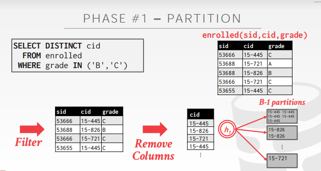
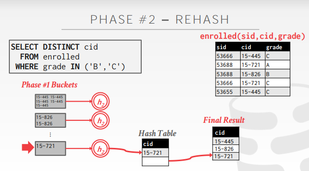

Course status
接下来的几节课里面，主要讲述以下内容：
- Operator Algorithms（具体的算子，比如join，sort是如何执行的）
- Query Processing Models（用什么方案执行查询，比如火山模型）
- Runtime archiectures（查询在内存中是什么架构，例如进线程模型）
Disk-oriented DBMS
硬盘中存储了大量的数据
而查询过程中，数据的中间结果不能全放在内存中
- 内存空间有限，中间结果可能很多，存放太多中间结果会导致内存用尽
并且，需要内存缓存池和硬盘进行配合，进行算子的操作
同时希望最大化的利用顺序IO，降低随机IO的次数
Why do we need to sort?
关系型数据库没有要求数据要按照特定的顺序排列（如果没有指定，一般SQL得到的结果都是无状态的）
但是查询往往希望按照特定的顺序检索元组
比如一些常见的操作：
- 去重操作（DISTINCT，先排序再去重）
- 聚合操作（GROUP BY、ORDER BY等，先排序再聚集）
Sorting algorithms
如果数据能够在内存中排序（即要排序的数据都在内存中），那么就可以使用标准的排序算法（比如快排等）
否则，就需要一种排序方法，能将大于内存大小的数据进行排序，同时也能兼顾数据在磁盘上读写的成本
External merge sort
要排序的数据不是在内存中的，而是在硬盘中的
将数据集分割成单独的运行，然后分别排序
阶段一：排序（对装入主存的数据块进行排序，然后将排序后的数据块写回磁盘上的文件中）Sorting
阶段二：合并（将排序后的子文件合并成一个更大的文件）Merging
Sorted run
假设我们需要对数据的某一列进行排序，则将这一列设为key，这一条数据设为value，组成一个kv对
其中数据的表达形式（即value）有以下两种方式：
- 方式一：v存储的是一整行的数据（early materialization，提早物化）
- 数据排序后不需要回表查询
- 方式二：v存储的是记录的id或者主键值（late materialization，延迟物化）
- 数据排序后需要用id或主键值进行回表查询
2-way external merge sort
2路归并排序
假设当前有page1和page2
先把page1放到内存中进行排序，把得到的结果1写入磁盘中
再把page2放到内存中进行排序，把得到的结果2写入磁盘中
此时磁盘中有page1、page2、结果1、结果2
然后将结果1和结果2都放到内存中，进行归并；合并得到的结果放到一个新的数据页中
合并好后把这个数据页放到磁盘中
Phase I
将表中的数据页读入到内存中，对数据页的内容进行排序，然后把排序好的结果返回给磁盘

Phase II
递归的将数据页成对成对合并（使用三个缓冲页，2个输入页，1个输出页）

Cost
因为需要对每个页内部的数据进行排序，所以就需要1个阶段
而每两个页进行合并排序，所以需要log2 N个阶段（这里需要向上取整）
统计总共需要多少个阶段，然后再乘以一个2N（因为每个阶段都需要读写2次数据，一次是将数据写入到内存，一次是将排序好的数据写入回内存）

Example
Pass #0：读取每一个数据页，将每一个数据页内的数据进行内部排序，使得数据页本身变为有序的
Pass #1，2，3：每次将两个数据页读入到内存中，将它们归并排序

Double buffering optimization
发现该算法只需要3个缓冲区页来执行排序，但是我们的内存buffer远远不止三个缓冲页，即这个思路没有有效的把空间利用起来
因此，当发生排序的时候，在后台预先取下一次要运行的数据页，并在系统当前处理其他页面的时候把它放到第二个缓冲区
不断的利用磁盘读取数据，减少每一步的IO请求的等待时间
本质上就是利用多余的内存，实现提前拉取数据的目的
General external merge sort
K路归并排序
Phase I：使用B个缓冲页对数据进行排序（假设数据表总共有N个数据页，总共需要[N/B]次读取数据并排序）
Phase II：将内存中的一个缓冲页作为输出页，其他的B-1个缓冲页用作K路合并排序
PS：MySQL就是用这种方法的

Cost
总共的阶段数是$1 + \lceil log_{B-1} \lceil N / B\rceil \rceil$（推理过程同上）
总共的消耗是$2N* (1 + \lceil log_{B-1} \lceil N / B\rceil \rceil)$
Example
第一个阶段，读取5个数据页，将这5个数据页的数据进行一次整体的排序
Pass #0：此时有108个数据页，分为22个整体（108/5向上取整，每个整体有5个page，最后一个整体只有3个page）；对每个整体内的数据进行排序
第二个阶段，将一个数据页位置作为输出位，那么此时剩余4个数据页
Pass #1：此时有22个整体（108/5向上取整，每个整体有5个page，最后一个整体只有3个page），那么每次就取4个整体，每个整体中取出一页，进行归并排序
Pass #2：此时有6个整体（22/4向上取整，每个整体有20个page，最后一个整体只有8个page），那么每次就取4个整体，每个整体中取出一页，进行归并排序
Pass #3：此时有2个整体（6/4向上取整，每个整体有80个page，最后一个整体只有28个page），那么每次就取4个整体，每个整体中取出一页，进行归并排序

Using B+trees for sorting
如果需要排序的属性，在表中建立了索引（比如说B+ tree），那么就可以使用它来加速排序
通过直接遍历B+ tree的叶子数据页，得到排序好的数据
这总是比外部排序好，因为没有计算成本，而且所有的磁盘访问都是顺序IO
分类：聚簇索引和非聚簇索引的B+树
Clustered index
聚簇索引，数据提早物化，已经放到B+树里面中，查询数据后不需要回表
B+树的数据结点和文件页是一一关联的，每一个叶子结点的数据，和文件页里面的tuple是一一关联的

Unclustered index
非聚簇索引，数据延迟物化，只记录行id，查询数据后需要用id进行回表
随机IO的次数可能会因为回表而变多
叶子结点的内容和数据页文件本身是不关联的

Aggregations
将多个元组聚合为单个标量值
主流的方式是排序和哈希
Sort aggregation
将数据过滤后，对数据进行排序，然后聚合去重

如果SQL语句不要求对原数据进行排序，那么这种方法的时间复杂度就会偏高
- 比如说group by分组，不需要排序
- 比如说distinct中的重复项，也不需要排序
因此，在上述情况下，hash aggregation是一个更好的选择：
- 只删除重复的数据
- 比排序更加的高效
Hash aggregation
执行Hash aggregation的两个目的：
- DISTINCT：对原数据进行去重
- GROUP BY：对原数据进行聚集

Partition
利用hash函数将数据进行划分（这里假设数据量非常大，因此需要将部分数据先写入磁盘中）

假设总共有B个buffer page，那么就将B-1个page作为分区，1个用于输入数据的缓冲区
使用哈希函数h1将元组拆分为磁盘上的分区，把所有相同hash值都位于同一分区中
最后将数据按照分区放到磁盘中（落盘的时候可以做一些优化，比如说把重复的数据给删除）
Rehash
为每个分区建立内存哈希表并计算聚合
- 为什么这里还需要rehash，因为上一个阶段的hash1可能发生哈希碰撞，因此需要rehash

把每个分区得数据都读到内存中（假设每个分区都适合内存），再进行以此rehash，就可以把第一次发生碰撞的值给找出来
对于磁盘上的每个分区，将其读入内存并构建内存哈希表（基于第二个哈希函数h2，h2适用于将数据按照指定条件分割）
然后遍历该hash的bucket以匹配元组
Hash summarization
存在一些场景，需要对数据进行sum、max、min，或avg的运算
所以在Rehash阶段中的hash2函数（第二个hash函数），应该存入的是一个kv对

Conclusion
对于Sort，Aggreagation，并没有说哪一种方法更好，只能说看情况选择合适的方法
- 如果数据本身就已经排好序了，那么就用Sort进行Aggreagtions即可
Sort排序时的一些优化思路：
- 把多个文件页组成文件块
- 尽量将随机IO变为顺序IO
- 提前预读数据（pre read）